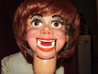
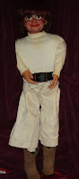
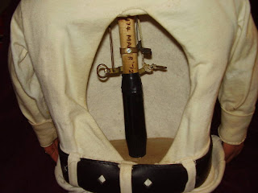

1972 Multi-Movement Maher Studios Female Ventriloquist Figure
4/6/2010
{kind=link}

Question: I have just purchased this figure on ebay and was wondering if you could shed some light as to its history. T
{kind=link}

his figure has 3 movements: Eyes to the Left and Right. leather winker and moving mouth. The movements all work smoothly. The figure includes a cowgirl hat, which is signed "Hee Haw", "Hi Mary - Jim Hager" "9-16-88". A flowered hat, western boots, white turtleneck and pants. She has red wig, but beneath is black hair in a standard men's style. The original owner was Colonel Bill Boley of Hopkinsville. The figure remained in his collection until his death in 2000, and was sold to Colonel Thom Murphy of Lexington Ky. Col. Thom Murphy was a long time member of Lexington's International Brotherhood of Magicians (IBM) Ring #198 and a beloved performer at the Kentucky Horse Park and magic events throughout the region. He passed away in 2009, and this figure was generously donated in his honor to the IBM Ring #198 by his wife Marilyn Murphy and his grandson Ryan to be sold at auction.* * * * *
{kind=link}

From Clinton: How very interesting! I can tell you with absolute certainty that I personally built the figure in the pictures you sent to me! It was sold as "Hal". The "174 Maher '72" was burnt into the head post using the tip of my solder gun. The clothes have been changed from what I shipped him in, of course, and someone has slipped that red female wig over the original wig, but the paint job and controls all appear to be original.
Now, I can also tell you that Col. Bill Boley was not the original owner. Bill must have purchased this figure from the original owner (or his or her family) or traded for this figure. I have no idea who that first owner would have been although the figure itself could provide a clue. The wigs I used were custom made for us by Myer Jacoby of NY, and since I usually ordered multiple quantities of wigs, each with specific measurements to fit the various heads I would be building at the time, we instructed the wig manufacturer to write the last name of the customer on the inside of the wig. If you ever remove that original wig, look for a name written on the underside.
As I read the description that was provided to you, it would appear that you are at least the fourth owner of this Clinton Detweiler figure. Congratulations!
Now, I can also tell you that Col. Bill Boley was not the original owner. Bill must have purchased this figure from the original owner (or his or her family) or traded for this figure. I have no idea who that first owner would have been although the figure itself could provide a clue. The wigs I used were custom made for us by Myer Jacoby of NY, and since I usually ordered multiple quantities of wigs, each with specific measurements to fit the various heads I would be building at the time, we instructed the wig manufacturer to write the last name of the customer on the inside of the wig. If you ever remove that original wig, look for a name written on the underside.
As I read the description that was provided to you, it would appear that you are at least the fourth owner of this Clinton Detweiler figure. Congratulations!